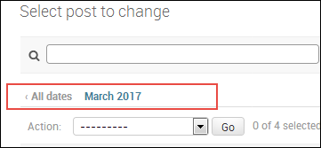
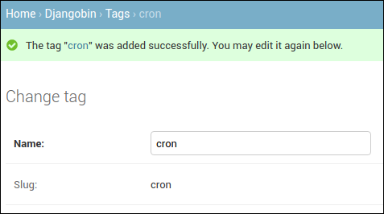

Django Admin App
Last updated on July 27, 2020
These days Admin sites are an integral part of any website. Administrators, author and staff members use admin site to manage the content of the main site. Django provides an admin site right out of the box for managing content, so that you can just focus on building features that you need instead of creating old boring admin sites. However, it doesn't mean that you can't roll out your own admin site. If Django admin site doesn't meet your requirements you can create your own admin site from scratch. In this series, however, we will not be doing that. If you are interested in building your own admin site, you have two options. The first is to wait for this series to finish, by then you will have enough knowledge to create your own admin site. The other option is to checkout my Django 1.10 series in which I have created an admin site from scratch). With further ado. Let's get started with Django admin app.
Creating a superuser #
To use admin site we first have to create a superuser. In the terminal enter the following command.
$ ./manage.py createsuperuser
First, you will be prompted to enter a username.
Username (leave blank to use 'overiq'): admin
Next, enter an email address. This is optional.
Email address: admin@overiq.com
Finally, enter a password and confirm it by retyping.
1 2 3 | Password:
Password (again):
Superuser created successfully.
|
Now you can login into the Django admin site.
Django Admin Site - The First Look #
Start the development server if not already running and point your browser to
http://localhost:8000/admin. You will see a login page like this:
Enter username and password and hit enter. On success, you will be redirected to the index page of Django admin site.

The index page shows a list of models available in your project. Currently, it is showing only Group and User models from the django.contrib.auth app (the second app in the INSTALLED_APPS setting). To display models from our djangobin app, we have to do a little configuration, which is the topic of the next section.
The Group model is used to organize permissions and the User model represents a site user. Managing permissions is out of scope for this series. As a result, our discussion will be limited only to the User model.
Click the "Users" links and you will be taken to the User list page, which looks like this:
The list page shows a list of objects from a particular model. The User list page shows a list of User objects in the database. As you can see in the above figure, currently, there is only one User object in the database which we have created in the previous section.
In addition to displaying User objects, the User list page allows us to do the following tasks:
- Add new user.
- Modify existing user.
- Search and filter users.
- Sort the user data by clicking on the column header.
- Delete user.
The Django admin site is quite self-explanatory. Any non-technical user should be able to use it without any problem. Try navigating the site on your own. Add some new users and modify existing one, this will give you a better idea of how Django admin site works. In the next section, we will add models from the djangobin app to the Django admin site.
Adding models to Django admin #
By default, Django admin site doesn't load any model from the apps we create. To add a model to the Django admin you have to modify admin.py file available inside every app directory. Open admin.py inside the djangobin app i.e djangobin/django_project/djangobin. At this point, admin.py should look like this:
djangobin/django_project/djangobin/admin.py
1 2 3 | from django.contrib import admin
# Register your models here.
|
Modify the file as follows:
djangobin/django_project/djangobin/admin.py
1 2 3 4 5 6 7 8 9 | from django.contrib import admin
from . import models
# Register your models here.
admin.site.register(models.Author)
admin.site.register(models.Language)
admin.site.register(models.Snippet)
admin.site.register(models.Tag)
|
In line 2, we are importing models from the djangobin app. To add a model to the Django admin site, pass the name of the model to the admin.site.register() method.
Open your browser and visit http://localhost:8000/admin/. You should see models from the djangobin app as follows:
Important features of Django admin #
In this section, we will discuss some important aspects of Django admin site. Our discussion will be restricted to the following points:
__str__()method.- Model Relationships.
- Data validation.
- Django tracking system.
- Widgets.
__str__() method #
Navigate to the Snippet list page ( i.e http://localhost:8000/admin/djangobin/snippet/) by clicking "Snippets" link in the Django admin home page. You will be displayed a page like this:
So what makes Django admin to show Snippet objects in this form?
By default, Django admin displays the value returned by the __str__() method defined in the model class. For Snippet models, the __str__() method is defined as follows:
djangobin/django_project/djangobin/models.py
1 2 3 4 5 6 7 | #...
class Snippet(models.Model):
#...
def __str__(self):
return (self.title if self.title else "Untitled") + " - " + self.language.name
#...
|
Modify the __str__() method of the Snippet model as follows:
1 2 3 4 5 6 7 | #...
class Snippet(models.Model):
#...
def __str__(self):
return self.language.name
#...
|
Refresh the Snippet list page (http://localhost:8000/admin/djangobin/snippet/) and it should now look like this:
As you can see Django admin site has picked-up our changes in the __str__() method and started displaying language of the snippet. We don't want these changed to be permanent because in next section will display Snippet's Language in the separate column. So lets revert back to our original __str__() definition.
1 2 3 4 5 6 7 | #...
class Snippet(models.Model):
#...
def __str__(self):
return (self.title if self.title else "Untitled") + " - " + self.language.name
#...
|
Refresh the Snippet list page again, and it should be back to the way it was.
Model Relationships in Django admin site #
This is one of the most important things that deserves some explanation. Recall that our
Snippet model has following relationships:
- A one-to-many relationship with
Authormodel. - A one-to-many relationship with
Languagemodel. - A many-to-many relationship with
Tagmodel.
For reference, this is how the Snippet model is defined.
djangobin/django_project/djangobin/models.py
1 2 3 4 5 6 7 8 9 10 11 12 13 14 15 16 17 | #...
class Snippet(models.Model):
title = models.CharField(max_length=200, blank=True)
original_code = models.TextField()
highlighted_code = models.TextField()
expiration = models.CharField(max_length=10, choices=Pref.expiration_choices)
exposure = models.CharField(max_length=10, choices=Pref.exposure_choices)
hits = models.IntegerField(default=0)
slug = models.SlugField()
created_on = models.DateTimeField(auto_now_add=True)
language = models.ForeignKey(Language, on_delete=models.CASCADE)
author = models.ForeignKey(Author, on_delete=models.CASCADE)
tags = models.ManyToManyField('Tag')
#...
|
We can see how Django admin site manages model relationships by adding a new snippet or editing an existing snippet.
Let's add a new snippet by clicking "ADD SNIPPET +" button at the top right corner of the snippet list page.
Django uses a single-selection <select> box to represent one-to-many relationships. We have two one-to-many relationships. The first is between Snippet and Language and the second is between Snippet and Author. The language and author field of the Snippet model is represented using a single-selection <select> element as follows:
You can also add a new language/author by clicking + link beside the <select> tag. Clicking the + icon opens a pop-up window which allows you to add a new object to the database.
Once a language or author is selected, you can also edit them by clicking yellow pencil icon beside the drop-down.
Similarly, Django uses a multiple-selection <select> box to represent a many-to-many relationship. As a snippet can have one or more than two tags, the multiple selection <select> box allows you to select more than one tag by holding Ctrl key while selecting.
You can also add a new tag by clicking the + link.
The language and the author field of the Snippet model is defined with on_delete parameter set to models.CASCADE. As a result, deleting an author or language will also delete its associated snippets.
Django admin Site Handles Validation #
Django admin site automatically provides input validation. Try saving a blank snippet or enter some invalid characters in the Slug field. You will see errors as follows:
In Add snippet (and Change snippet) form, all the fields are required except the title (we are not taking account of created_on field which has auto_now_add parameter set True). The title field is optional because we have set blank=True while defining it in the Snippet model.
Also, note that the Django admin site shows required fields in bold.
Django tracking system. #
Django keeps track of the changes you have made to the object. To view the change log click on the "History" link in the object editing page.
If you haven't made any changes to the object then you will get the following message.
Widgets #
The widgets refer to the way a Model field is displayed in the form. Django provides widgets on the basis of field types defined in the model. For example, a CharField is displayed as an <input> element, ForeignKey as a select-box, BooleanField as a checkbox and so on. We will learn more about widgets and how to override them in Django Form Basics chapter.
Customizing the List page #
Open your browser and visit Language list page (http://localhost:8000/admin/djangobin/language/) by clicking "Languages" link on the index page of Django admin site.
This page is similar to User list page (http://localhost:8000/admin/auth/user/) but there are subtle differences.
- Unlike User list page there is no search bar.
- No filters on the right-hand side.
- The
Languagemodel consists of 7 fields (name,lang_code,slug,mime,file_extension,created_onandupdated_on) but onlynameis visible. - We can't sort by clicking on the column header.
To customize the appearance of models on the list page, we use ModelAdmin class. The ModelAdmin class provides several attributes which allow us to change how a model is displayed in the list page. All these attributes are defined on the subclass of ModelAdmin in the admin.py file of the app. The following is a list of some common attributes of ModelAdmin.
list_display- It controls which model fields to display on the list page. It accepts a list or tuple of field names. In addition to displaying fields, it also makes them sortable. For example,list_display = ('name', 'email', 'created_on',)
This will display data from
name,emailandcreated_onfields from the model class and also makes them sortable.search_fields- This attribute enables the search function on the list page. It accepts a list or tuple of field names where you want to search. It performs a case-insensitive search. For example:search_fields = ('name', 'email',)
ordering- It specifies how the list of objects should be ordered in the list page. It takes a list or tuple of field names. For example:ordering = ['-name']
This will display a list of objects in descending order by
name. Note that this option will override theorderingattribute of the innerMetaclass.list_filter- This attribute activates the filtering bar on the right side of the list page. It accepts a list or tuple of field names. Django automatically provides different shortcuts to filter the objects based on the type of the field. For example, if the field is of typeDateFieldthen Django providesToday,Past 7 days,This monthandThis yearshortcuts. Similarly, if the field is of typeBooleanFieldthen Django providesAll,YesandNoshortcuts.date_hierarchy- This attribute is specially designed to provide an intelligent date based drill-down navigation just above Action select box. It takes a string, not a list or tuple. Asdate_hierarchycreates date based filter, you are only allowed to specify a field of typeDateFieldorDateTimeFieldonly. Here is how this attribute looks like on the list page.
Let's put some of the attributes to test. Open admin.py inside the djangobin app and create a class named LanguageAdmin which inherits from admin.ModelAdmin class as follows:
djangobin/django_project/djangobin/admin.py
1 2 3 4 5 6 7 8 9 10 11 12 13 14 15 16 17 18 | from django.contrib import admin
from . import models
# Register your models here.
class LanguageAdmin(admin.ModelAdmin):
list_display = ('name', 'lang_code', 'slug', 'mime', 'created_on')
search_fields = ['name', 'mime']
ordering = ['name']
list_filter = ['created_on']
date_hierarchy = 'created_on'
admin.site.register(models.Author)
admin.site.register(models.Language, LanguageAdmin)
admin.site.register(models.Snippet)
admin.site.register(models.Tag)
|
To register the changes outlined by the LanguageAdmin class we pass its name as a second argument to the register() method which registers its corresponding model.
Refresh the Language list page and it will look like this:
Before we move ahead, let's add some more classes in admin.py file to customize the appearance of Snippet and Tag models.
djangobin/django_project/djangobin/admin.py
1 2 3 4 5 6 7 8 9 10 11 12 13 14 15 16 17 18 19 20 21 22 23 | #...
class LanguageAdmin(admin.ModelAdmin):
#...
date_hierarchy = 'created_on'
class SnippetAdmin(admin.ModelAdmin):
list_display = ('language', 'title', 'expiration', 'exposure', 'author')
search_fields = ['title', 'author']
ordering = ['-created_on']
list_filter = ['created_on']
date_hierarchy = 'created_on'
class TagAdmin(admin.ModelAdmin):
list_display = ('name', 'slug',)
search_fields = ('name',)
admin.site.register(models.Author)
admin.site.register(models.Language, LanguageAdmin)
admin.site.register(models.Snippet, SnippetAdmin)
admin.site.register(models.Tag, TagAdmin)
|
Customizing Forms #
To customize forms, the admin.ModelAdmin class provides following attributes.
fields- By default, the order of appearance of fields in the forms is same as that of fields in the model class. To change the order, list the fields in the order you want as a list or tuple. For example,fields = ['title', 'created_on', 'author']
This will display the
"title"field followed by the"created_on"field and then the"author"field at last.In addition to ordering the field, you can also use this attribute to remove one or more fields from being edited/added entirely.
filter_horizontal- This attribute can only be used withManyToManyField. By default,ManyToManyFieldfield is displayed using a multiple selection<select>box. Selecting records from a small list is easy but what if there are hundreds or thousands of records? To make the selection easier Django providesfilter_horizontalattribute. It accepts list or tuple of the field names of typeManyToManyField. It then creates a nice interface which allows searching through the records as well as view available records and chosen records.Let's use this attribute to change the way
tagsfield of the Snippet model is rendered. Openadmin.pyand addfilter_horizontalattribute towards the end ofSnippetAdminclass as follows:djangobin/django_project/djangobin/admin.py
1 2 3 4
class SnippetAdmin(admin.ModelAdmin): #... date_hierarchy = 'pub_date' filter_horizontal = ('tags',)
Visit Add snippet or Change Snippet page. You will see a widget like this:
raw_id_fields- There is no doubt thatfilter_horizontalmakes record selection easier. But if you have hundreds or thousands of records, loading all these at once could take a while. The solution is to useraw_id_fieldsinstead offilter_horizontal.It accepts list or tuple of the field names of type
ManyToManyFieldorForeignKeyand creates an input box (<input type="text" ... />) where you can enter primary key of the record.Open
admin.pyfile and comment out thefilter_horizontalattribute we have added toSnippetAdminclass in the previous step. And then addraw_id_fieldsattribute just below it.djangobin/django_project/djangobin/admin.py
1 2 3 4
class SnippetAdmin(admin.ModelAdmin): #... # filter_horizontal = ('tags',) raw_id_fields = ('tags',)
Visit Add Snippet or Change snippet page again. You should see
tagsfield like this.To enter the data click on the search-icon beside the input box and a pop-window will open which allows you to select and search through the records.
prepopulated_fields- This attribute automatically adds content to the field. It accepts a dictionary mapping field names to the fields it should pre-populate form. It is commonly used to create slugs. For example:prepopulated_fields = {'slug': ('title',)}`
This will pre-populate the
slugfield from thetitlefield using JavaScript.Open
admin.pyand addprepopulated_fieldsattribute to theTagAdminclass as follows:djangobin/django_project/djangobin/admin.py
1 2 3 4
class TagAdmin(admin.ModelAdmin): list_display = ('name', 'slug',) search_fields = ('name',) prepopulated_fields = {'slug': ('name',)}
Visit Add tag page (
http://localhost:8000/admin/djangobin/tag/add/) and enter some data in the title field. You will that notice the slug field automatically gets populated in real time.The
prepopulated_fieldsattribute only pre-populate field while adding new a record, it will not pre-populate the field when you update a record.readonly_fields- This attribute makes the fields read-only. It accepts field names as list or tuple.As things stand, when we create a new snippet, we are required enter data in
highlighted_code,slugandhitsfields. If you think about it entering data into these field doesn't really make much sense, no matter whether you are adding a snippet or updating an existing snippet. This is especially true forhighlighted_codeandslugfields. The former contains the HTML code generated by the Pygments package and the later contains a unique identifier to access the snippets. A better approach would be to make these fields read-only and somehow provide data to them automatically while saving the snippet.Let's start by making these fields read-only. Once again open
admin.pyand addreadonly_fieldsattribute toSnippetAdminlike this:djangobin/django_project/djangobin/admin.py
1 2 3 4
class SnippetAdmin(admin.ModelAdmin): #... raw_id_fields = ('tags',) readonly_fields = ('highlighted_code', 'hits', 'slug', )
Save the file and visit Add snippet (or change snippet) page. You should see a page like this:
Notice that all the three fields are pushed at the end of the page, this happens because Django first displays editable fields followed by read-only fields. We can easily change this behavior using the
fieldsattribute we discussed earlier in this section. Just afterreadonly_fieldsattribute in theSnippetAdminclass, add thefieldsattribute as follows:djangobin/django_project/djangobin/admin.py
1 2 3 4 5
class SnippetAdmin(admin.ModelAdmin): #... readonly_fields = ('highlighted_code', 'hits', 'slug', ) fields = ('title', 'original_code', 'highlighted_code', 'expiration', 'exposure', 'hits', 'slug', 'language', 'author', 'tags' )
Refresh the Add snippet page and you will see all the field listed in the same order as specified in the
fieldsattribute.
While we are it, let's make the
slugfield of Tag model read-only. In theadmin.py, comment outprepopulated_fields = {'slug': ('name',)}and then add
readonly_fieldsattribute toTagAdminas follows:djangobin/django_project/djangobin/admin.py
1 2 3 4 5
class TagAdmin(admin.ModelAdmin): list_display = ('name', 'slug',) search_fields = ('name',) # prepopulated_fields = {'slug': ('name',)} readonly_fields = ('slug',)
We have made some fields read-only. In the next section, we will see how we can automatically provide data to them.
Before we leave this section, it is important to mention that model fields of type
DateFieldandDateTimeFieldwhoseauto_now_addorauto_nowparameter is set toTruewill not appear in Django admin site, even if you add their names to thefieldsattribute.fields = ('title', 'slug', 'pub_date', 'content', 'author', 'category', 'tags',)
In fact, doing so raises a
FieldErrorexception.
Customizing object creation by overriding save() method #
The save() method of the models.Model class is called everytime you create or update an object. To customize the object creation we can override the save() method in our model class.
Let's start by overriding save() method for the Snippet model.
Open models.py and add the save() method after the get_absolute_url() method as follows:
djangobin/django_project/djangobin/models.py
1 2 3 4 5 6 7 8 9 10 11 12 13 14 15 16 17 18 19 20 21 22 | #...
from django.shortcuts import reverse
import time
#...
class Snippet(models.Model):
#...
tags = models.ManyToManyField('Tag')
def get_absolute_url(self):
return reverse('djangobin:snippet_detail', args=[self.slug])
def save(self, *args, **kwargs):
if not self.slug:
self.slug = str(time.time()).replace(".", "")
self.highlighted_code = self.highlight()
if not self.title:
self.title = "Untitled"
super(Snippet, self).save(*args, **kwargs) # Call the "real" save() method.
#...
|
In line 15, the if statement checks whether self.slug exists or not. If it doesn't then it means that the save() method is called to create the snippet. On the other hand, if self.slug exists, save() method is called to update the snippet. This condition is necessary otherwise, the save() method would change the slug after every update.
In line 17, We call highlight() method of the Snippet model to do the actual highlighting and then we assign its result to the highlighted_code field.
In line 18, we are checking whether self.title contains a value or not. If it doesn't, we set a default value of "Untitled".
At last, in line 20, we call the overridden save() method to save the result to the database.
After these changes visit Add snippet page and try submitting a snippet or two.

Notice how the data is automatically populated in the highlighted_code, slug, and hits fields. The save() method is run every time you create or update a Snippet object.
You might have noticed that you are still required to submit at-least one tag to create a Snippet object. The Snippet model has many-to-many relationship with the Tag model. We can make the Tag field optional by setting blank=True. Open models.py in djangobin app and update it as follows:
1 2 3 4 5 6 7 8 | class Snippet(models.Model):
#...
author = models.ForeignKey(Author, on_delete=models.CASCADE)
tags = models.ManyToManyField('Tag', blank=True)
def __str__(self):
return (self.title if self.title else "Untitled") + " - " + self.language.name
#...
|
To commit the change create a migration using the makemigrations command:
1 2 3 4 | $ ./manage.py makemigrations djangobin
Migrations for 'djangobin':
djangobin/migrations/0009_auto_20180328_1409.py
- Alter field tags on snippet
|
Then, commit the migration using the migrate command:
1 2 3 4 5 | $ ./manage.py migrate djangobin
Operations to perform:
Apply all migrations: admin, auth, contenttypes, djangobin, sessions
Running migrations:
Applying djangobin.0009_auto_20180328_1409... OK
|
Visit Add snippet page again and create a new snippet. You will find that you no longer require submitting tags to create a new snippet.
Let's now shift our attention to the Tag model.
Just like Snippet objects, we want to create Tag objects without entering any data in the slug field. We have already made slug read-only in the preceding section. The only thing remaining is to override the save() method in the Tag model and set the value of value slug field there. Open model.py file and update it to include the save() method as follows:
1 2 3 4 5 6 7 8 9 10 11 12 13 14 15 16 17 18 19 | #...
import time
from django.utils.text import slugify
from .utils import Preference as Pref
#...
class Tag(models.Model):
name = models.CharField(max_length=200, unique=True)
slug = models.SlugField(max_length=200, unique=True)
#...
def get_absolute_url(self):
return reverse('djangobin:tag_list', args=[self.slug])
def save(self, *args, **kwargs):
self.slug = slugify(self.name)
super(Tag, self).save(*args, **kwargs) # Call the "real" save() method.
|
In the save() method we are using the slugify() function provided by Django to create the slug from the name field. Recall that slug can only contain letters, numbers, underscores and hyphens. If the value of name field is "enter the dragon" then the slugify() function will return "enter-the-dragon". Also, notice that we are not testing whether slug field contains any value or not because we want the save() method to recreate the slug after every update.
From now on you will be able to create new Tags without entering any value in the slug field.

Changing Field Labels #
The form labels in Django admin site uses the field names from the models. If the field name in the model is name then form label will be Name. If label consists of multiple words separated by underscore like pub_date, then form label will be Pub date.
We can explicitly specify the field label using the verbose_name parameter while defining the field in the model class. Open models.py file and add verbose_name to name field in Language model as follows:
djangobin/django_project/djangobin/models.py
1 2 3 4 5 6 | #...
class Language(models.Model):
name = models.CharField(max_length=100)
lang_code = models.CharField(max_length=100, unique=True, verbose_name='Language Code')
slug = models.SlugField(max_length=100, unique=True)
#...
|
To commit the changes use makemigrations and migrate commands as usual.
1 2 3 4 | $ ./manage.py makemigrations djangobin
Migrations for 'djangobin':
djangobin/migrations/0011_auto_20180329_0636.py
- Alter field lang_code on language
|
1 2 3 4 5 | $ ./manage.py migrate
Operations to perform:
Apply all migrations: admin, auth, contenttypes, djangobin, sessions
Running migrations:
Applying djangobin.0011_auto_20180329_0636... OK
|
Visit Add language (or Change language) page to see the changed label.
Adding Help Text to Snippet Form #
In Django Models Basics lesson, we have discussed a field option called help_text. If you recall, the help_text option species a string which serve as a description of the field.
Visit Add Snippet (or Change snippet) page and you will get a form like this:
As you can see, the Add snippet form consists of 3 read-only fields: Highlighted Code, Hits and Slug. First time visitor to this page may get confused about how to use this fields. Since we are automatically providing data to these fields, we should explicitly tell users that these fields are read-only and will be populated automatically while saving the snippet.
To add help_text parameter open models.py file in the djangobin app and modify Snippet model as follows:
djangobin/django_project/djangobin/models.py
1 2 3 4 5 6 7 8 9 10 11 12 13 | #...
class Snippet(models.Model):
#...
title = models.CharField(max_length=200, blank=True)
original_code = models.TextField()
highlighted_code = models.TextField(blank=True, help_text="Read only field. Will contain the"
" syntax-highlited version of the original code.")
expiration = models.CharField(max_length=10, choices=expiration_choices)
exposure = models.CharField(max_length=10, choices=exposure_choices)
hits = models.IntegerField(default=0, help_text='Read only field. Will be updated after every visit to snippet.')
slug = models.SlugField(help_text='Read only field. Will be filled automatically.')
created_on = models.DateTimeField(auto_now_add=True)
#...
|
Once again run makemigrations and migrate command to commit changes. Refresh the Add snippet (or Change snippet) page to see the help text:
Load Comments